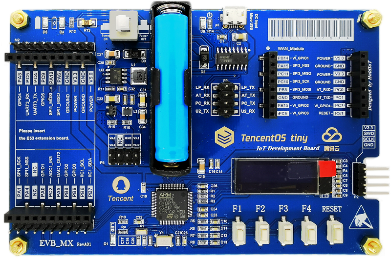

一、TencentOS Tiny 简介
TencentOS tiny 是腾讯面向物联网领域开发的实时操作系统，具有低功耗，低资源占用，模块化，安全可靠等特点，可有效提升物联网终端产品开发效率。TencentOS tiny 提供精简的 RTOS 内核，内核组件可裁剪可配置，可快速移植到多种主流 MCU (如 STM32 全系列)及模组芯片上。而且，基于 RTOS 内核提供了丰富的物联网组件，内部集成主流物联网协议栈（如 CoAP/MQTT/TLS/DTLS/LoRaWAN/NB-IoT 等），可助力物联网终端设备及业务快速接入腾讯云物联网平台。
1、TencentOS tiny整体架构

TencentOS tiny 主体架构图，从下到上主要包括：
CPU 库 ：TencentOS tiny 支持的 CPU IP 核架构，当前主要支持 ARM Cortex M0/3/4/7，Cortex A7，RISC-V、MSP430、AVR、STM8 等。
驱动管理层 ：包括板级支持包（BSP，主要由 MCU 芯片厂家开发与维护）、硬件抽象层（HAL，主要由 TencentOS tiny 提供，方便不同芯片的适配与移植）、设备驱动（Drivers，例如 Wi-Fi、GPRS、LoRa 等模块的驱动程序）。
内核 ：TencentOS tiny 实时内核包括任务管理、实时调度、时间管理、中断管理、内存管理、异常处理、软件定时器、链表、消息队列、信号量、互斥锁、事件标志等模块。
IoT 协议栈：TencentOS tiny 提供 lwip、AT Adapter、SAL 层，支持不同的网络硬件，例如以太网、串口 Wi-Fi、GPRS、NB-IoT、4G 等通信模块。TCP/IP 网络协议栈上提供常用的物联网协议栈，例如 CoAP、MQTT，支撑终端业务快速接入腾讯云。
安全框架：TencentOS tiny 为了确保物联网终端数据传输安全以及设备认证安全，提供了完整的安全解决方案。安全框架提供的 DTLS 和 TLS 安全协议，加固了 COAP 及 MQTT 的传输层，可确保物联网终端在对接腾讯云时实现安全认证和数据加密；另外针对低资源的终端硬件，安全框架还提供与腾讯云 IoTHub 配套的密钥认证方案，确保资源受限设备也能在一定程度上实现设备安全认证。
组件框架：TencentOS tiny 提供文件系统、KV 存储、自组网、JS 引擎、低功耗框架、设备框架、OTA、调试工具链等一系列组件，供用户根据业务场景选用。
开放 API（规划开发中）：TencentOS tiny 将在协议中间件和框架层上提供开放 API 函数，方便用户调用中间件功能，使用户无需过多关心中间件具体实现，快速对接腾讯云，实现终端业务上云的需求，期望最大程度减少终端物联网产品开发周期，节省开发成本。
示例应用：TencentOS tiny 提供的示例代码，模块测试代码等，方便用户参考使用。
2、TencentOS tiny 优势
(1).小体积
最小内核：RAM 0.6KB，ROM 1.8KB 典型 LoraWAN 及传感器应用：RAM 3.3KB，ROM 12KB
(2).低功耗
休眠最低功耗低至 2uA 支持外设功耗管理框架
(3).丰富的 IoT 组件
集成主流 IoT 协议栈 多种通信模组SAL层适配框架； 支持 OTA 升级 提供简单易用端云 API，加速用户业务接入腾讯云
(4).可靠的安全框架
多样化的安全分级方案 均衡安全需求&成本控制
(5).良好的可移植性
内核及IoT组件高度解耦，提供标准适配层 提供自动化移植工具，提升开发效率
(6).便捷的调试手段
提供云化的最后一屏调试功能 故障现场信息自动上传云平台，方便开发人员调试分析
3、TencentOS tiny携手合作伙伴共建IoT生态
TencentOS tiny 自开源发布以来也在努力发展合作伙伴，期待合作共赢，共同扩展 IoT 应用生态。目前已经与多家 MCU/IP 核厂家达成了合作，包括意法半导体、恩智浦半导体、兆易半导体、ARM、华大半导体、芯来科技等；也与无线 SOC 和模组厂家达成了广泛的合作关系，包括瑞兴恒方、国民技术、Nordic 蓝牙、亮牛半导体、有人物联网等，
除了MCU和模组外，TencentOS tiny 也积极推进终端产品及项目的落地，目前已经形成了AI智慧农业、智能货柜、智慧会议室等方案，并且在腾讯内部与 AI 平台部、腾讯微瓴、QQ family 达成内部合作，共同扩展行业生态；同时也开始积极发展外部客户，目前与深圳光合显示科技的墨水屏零售标签、鑫悦购充电桩等达成业务合作。TencentOS tiny 将携手合作伙伴为物联网终端厂家提供更优质的 IoT 终端软件解决方案，方便各种物联网设备快速接入腾讯云，共同扩展 IoT 生态，更好地支撑智慧城市、智能水表、智能家居、智能穿戴、车联网等多种行业应用。
欢迎 IoT 相关项目合作，有合作需求的请邮件联系 TencentOS tiny 官方工作人员，邮箱地址 ： supowang@tencent.com
二、TencentOS tiny 代码目录
三、TencentOS tiny 参考文档
1、移植指南
2、TencentOS tiny 开发指南
3、TencentOS tiny 腾讯云大学视频教程
四、TencentOS tiny 开源协议
- TencentOS tiny 遵循 BSD-3 开源许可协议
五、TencentOS tiny 支持的物联网平台
TencentOS tiny 能支持物联网终端设备和业务快速接入腾讯云物联网平台 IoT Explorer。
TencentOS tiny 结合腾讯云物联网开发平台 IoT Explorer，已经构筑起连接通讯芯片到云开发的能力，加上已经建设完成的国内最大规模 LoRa 网络，腾讯彻底打通从芯片通讯开发、网络支撑服务，物理设备定义管理，数据分析和多场景应用开发等全链条IoT云开发服务能力，重新定义了物联网开发模式，助力亿级设备多方式多模式低门槛接入腾讯云服务。作为物联网基础设施建设服务者，腾讯将持续打造开放的物联网生态体系，促进物联网生态良性发展。
六、TencentOS tiny 快速入门参考
TencentOS tiny 联合合作伙伴(南京厚德物联网)设计了定制开发板，如下图： 
- TencentOS tiny 定制开发板介绍页，开发者可以基于定制开发板进行快速入门学习，点击下载参考文档
- TencentOS-tiny 定制开发板入门指南
七、贡献代码
-
- 在您自己的 GitHub 账户下 Fork TencentOS tiny 开源项目；
-
- 根据您的需求在本地 clone 一份 TencentOS tiny 代码；
-
- 您修改或者新增功能后，push 到您 fork 的远程分支；
-
- 创建 pull request，向 TencentOS tiny 官方开发分支提交合入请求；
-
- TencentOS tiny 研发团队会定期 review 代码，通过测试后合入。
八、加入TencentOS tiny官方QQ技术交流群
扫码加群，请备注 TencentOS tiny 开发者，工作人员会根据备注进行审核：
九、第三方开发者评测
1.基于 TencentOS tiny 的环境监测实战项目 【TencentOS tiny】环境监测实战项目最终完整版 感谢阿正的贡献
2.基于野火 stm32f103 开发板上移植的 TencentOS tiny 例程、源码剖析、视频讲解。 感谢 CSDN 博客专家杰杰的贡献
简单上手：
深度源码分析：
配套例程：
视频教程：
- 【TencentOS tiny 学习】视频汇总
- 【视频】01-初识 TencentOS tiny
- 【视频】02-TencentOS tiny 基础知识
- 【视频】03-TencentOS tiny 移植
- 【视频】04-TencentOS tiny 任务-1
- 【视频】05-TencentOS tiny 任务-2
- 【视频】06-TencentOS tiny 队列-1
- 【视频】07-TencentOS tiny 队列-2
- 【视频】08-TencentOS tiny 消息队列
- 【视频】09-TencentOS tiny 信号量-1
- 【视频】10-TencentOS tiny 信号量-2
- 【视频】11-TencentOS tiny 互斥锁-1
- 【视频】12-TencentOS tiny 互斥锁-2
- 【视频】13-TencentOS tiny 互斥锁-3
- 【视频】14-TencentOS tiny 事件-1
- 【视频】15-TencentOS tiny 事件-2
- 【视频】16-TencentOS tiny 软件定时器-1
- 【视频】17-TencentOS tiny 软件定时器-2
- 【视频】18-TencentOS tiny 软件定时器-3